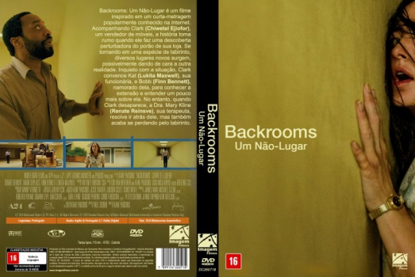

![link to Backrooms: Um Não-Lugar [Autorado] on Rotten Tomatoes](../img/tomatoes.png)
![link to Backrooms: Um Não-Lugar [Autorado] on TheMovieDb](../img/themoviedb.png)

Outro Título:Backrooms
País:United States, 111 minutos
Idiomas falados:Inglês, Português
Gênero(s):Terror, Mistério, Sci-Fi
Diretor(s):Kane Parsons
Escritor(es):Will Soodik
Codec:MPEG-2 (DVD)
Número: 5948


Certificado:16
Sinopse:
Backrooms: Um Não-Lugar é um filme inspirado em um curta-metragem popularmente conhecido na internet. Acompanhando Clark (Chiwetel Ejiofor), um vendedor de móveis, a história toma rumo quando ele faz uma descoberta perturbadora do porão de sua loja. Se tornando em uma espécie de labirinto, diversos lugares novos surgem, possivelmente dando de cara a outra realidade. Inquieto com a situação, Clark convence Kat (Lukita Maxwell), sua funcionária, e Bobb (Finn Bennett), namorado dela, para conhecer a extensão e entender um pouco mais sobre ela. No entanto, quando Clark desaparece, a Dra. Mary Kline (Renate Reinsve), sua terapeuta, resolve ir atrás dele, mas também acaba se perdendo pelo labirinto.
Elenco:
Tipo de mídia: DVD5,
Legendas: Português, Sem Legendas
Alugado: Não
Tela: Anamorphic Widescreen